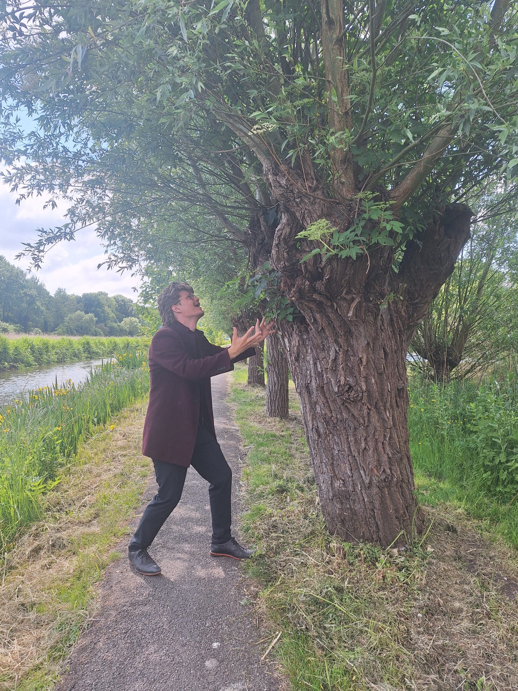
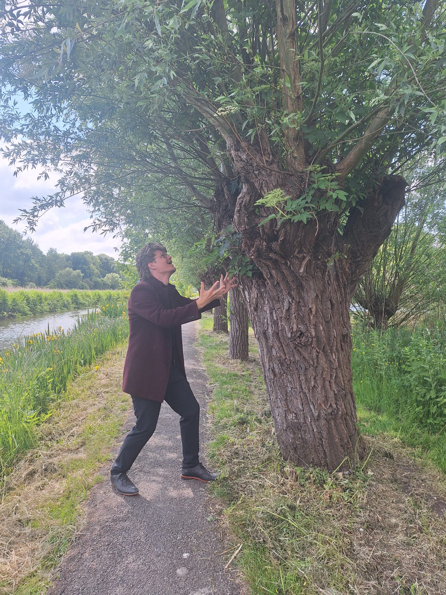

POLDERS is een sandbox crafting game in oud-Hollands thema waarin je als 17e-eeuwse dijkgraaf de strijd aangaat met het kolkende water. Blok voor blok transformeer jij het complete landschap. Bouw molens, dijken en sluizen om je voeten droog te houden, en breid met grachtenpanden je nederzetting uit van gehucht tot bruizende handelsstad.
POLDERS is a sandbox crafting game with an old-Dutch theme in which you, as a 17th-century Dike Warden, battle the relentless waters. Block by block, you transform the entire landscape. Build windmills, dikes, and sluices to keep your feet dry, and expand your settlement from shabby hamlet to a bussling trading city.
POLDERS zit zo in elkaar dat je door het te spelen per ongeluk realiseert hoe Nederland gevormd is. Ruimtegebrek los je op door polders te bouwen. Verse producten worden door windmolens verpulverd, transport gebeurt per trekschuit, en de zee zal meedogenloos toeslaan daar waar je vergeet de dijken te controleren!
De gameplay van POLDERS is het best uit te leggen als een minimalistische sandbox city builder met automatiseringselementen. Denk aan een mix tussen Townscaper, Terra Nil, Minecraft, en Mini Settlers. POLDERS is uniek als city builder, in dat je fysiek door de wereld loopt, en de gehele wereld door jou aanpasbaar is door het combineren van blokjes tot de juiste gebouwen.
POLDERS is designed in such a way that by playing it, you inadvertently realize how the Netherlands was shaped. You solve space shortages by building polders. Fresh products are pulverized by windmills, transport is by tow barge, and the sea will strike mercilessly where you forget to check the dikes!
The gameplay of POLDERS is best described as a minimalist sandbox city builder with automation elements. Think of a mix between Townscaper, Terra Nil, Minecraft, and Mini Settlers. POLDERS is unique as a city builder in that you physically walk through the world, and the entire world is adaptable by you by combining blocks into the correct buildings.
Dijkgraven op zoek naar uitdaging kunnen hun borst al nat maken! Wind, regen en Allerheiligenstormen zullen getrotseerd moeten worden om je stad veilig te houden. Jouw strategie in POLDERS staat & valt bij hoeveel risico jij durft te nemen met het water. Transport verloopt via het water, maar zijn de kades hier wel stevig genoeg voor? Polders geven meer landbouwgrond, maar vereisen ook meer onderhoud, en de productie staat stil wanneer de polder onder water staat...
Klinkt dat als te veel? De environmental uitdagingen van POLDERS zijn gelukkig opt-in. Creativelingen die uit zijn naar het maken van een prachtige handelsstad zullen niet gehinderd worden!
Dike Wardens looking for a challenge must brace themselves! Wind, rain, and All Saints' Day storms will have to be braved to keep your city safe. Your strategy in POLDERS stands or falls by how much risk you dare to take with the ferocious Wolf of the Water. Transport is by water, but are the quays strong enough for this? Polders provide more agricultural land but also require more maintenance, and production halts when the polder is flooded...
Does that sound like too much? We got you covered: The environmental challenges in POLDERS are opt-in. We won't stop creatives aiming to build the most beautiful trading city!
 

POLDERS is voor ons meer dan alleen een vermakelijk spel. We hebben uitbundig gesproken met boeren, molenaars en cultuurinstanties. De mechanieken in het spel zoals het draaien van molens, trekschuiten, en turfwinning komen direct uit de cultuurhistorie, en worden zo accuraat mogelijk gepresenteerd. De 3D-modellen zijn gebaseerd op echte monumenten in Nederland, en de art-style is geïnspireerd door Van Ruisdael & Vermeer.
Op deze manieren willen we van POLDERS een cultuurhistorische beleving maken, die spelers verbindt met het verleden en heden van het landschap dat we ons thuis noemen.
For us, POLDERS is more than just an entertaining game. We have spoken extensively with farmers, millers, and cultural institutions. The game mechanics, such as operating windmills, tow ships, and 'turf' extraction, come directly from cultural history and are presented as accurately as possible. The 3D models are based on real monuments in the Netherlands, and the art style is inspired by Van Ruisdael & Vermeer.
In these ways, we want to make POLDERS a cultural-historical experience, connecting players with the past and present of the landscape the Dutch call home.
POLDERS is well on its way, but we're not there yet! It remains a cliché, but the best way you can help us is by sharing POLDERS with as many people as possible using the socials below. Your friends, family, colleagues, shout it from the rooftops! Only then can we make POLDERS a complete success! Thank you in advance <3